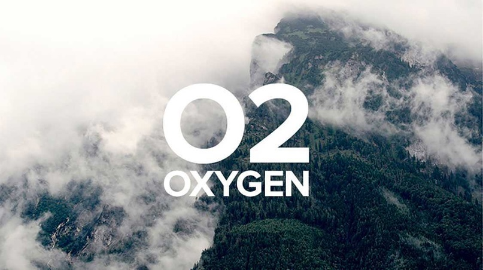
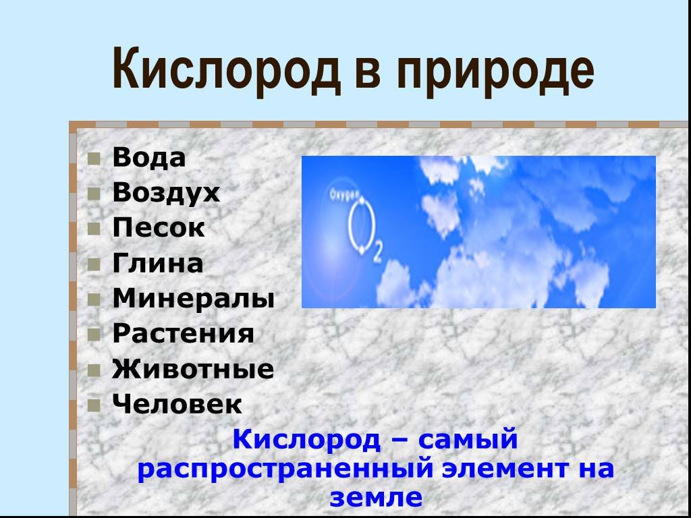

Кислород
Кислоро́д (химический символ — O, от лат. Oxygenium) — химический элемент 16-й группы (по устаревшей классификации — главной подгруппы шестой группы, VIA), второго периода периодической системы Д. И. Менделеева, с атомным номером 8. Кислород — химически активный неметалл, является самым лёгким элементом из группы халькогенов. Как простое вещество (при нормальных условиях) кислород — газ без цвета, вкуса и запаха, молекула которого состоит из двух атомов (формула — O2). Систематическое название: дикислород. Жидкий кислород (при низких температурах) имеет светло-голубой цвет, а твёрдый (при низких температурах) представляет собой кристаллы светло-синего цвета.

Кислород получили в 1774 г. независимо К. В. Шееле (путём прокаливания нитратов калия KNO3 и натрия NaNO3, диоксида марганца MnO2 и других веществ) и Дж. Пристли (при нагревании тетраоксида свинца Pb3О4 и оксида ртути HgО). Позднее, когда было установлено, что кислород входит в состав кислот, А. Л. де Лавуазье предложил название oxygène (от греч. ὀξύς – кислый, острый и γένος – рождение; отсюда и русское название «кислород»).
Кислород как в свободном виде, так и в составе различных веществ (например, ферментов оксидаз и оксидоредуктаз) принимает участие во всех окислительных процессах, протекающих в живых организмах. В результате выделяется большое количество энергии, расходуемой в процессе жизнедеятельности.
Технический кислород используют как окислитель в металлургии (см., например, Кислородно-конвертерный процесс), при газопламенной обработке металлов (см., например, Кислородная резка), в химической промышленности при получении искусственного жидкого топлива, смазочных масел, азотной и серной кислот, метанола, аммиака и аммиачных удобрений, пероксидов металлов и др. Чистый кислород используют в кислородно-дыхательных аппаратах на космических кораблях, подводных лодках, при подъёме на большие высоты, проведении подводных работ, в лечебных целях в медицине (см. в статье Оксигенотерапия). Жидкий кислород применяют как окислитель ракетных топлив, при взрывных работах. Водные эмульсии растворов газообразного кислорода в некоторых фторорганических растворителях предложено использовать в качестве искусственных кровезаменителей (например, перфторан).

Кислород – самый распространённый химический элемент на Земле: содержание химически связанного кислорода в гидросфере составляет 85,82 % (главным образом в виде воды), в земной коре – 49 % по массе. Известно более 1400 минералов, в состав которых входит кислород. Среди них преобладают минералы, образованные солями кислородсодержащих кислот (важнейшие классы – природные карбонаты, природные силикаты, природные сульфаты, природные фосфаты), и горные породы на их основе (например, известняк, мрамор), а также различные природные оксиды, природные гидроксиды и горные породы (например, базальт). Молекулярный кислород составляет 20,95 % по объёму (23,10 % по массе) земной атмосферы. Кислород атмосферы имеет биологическое происхождение и образуется в зелёных растениях, содержащих хлорофилл, из воды и диоксида углерода при фотосинтезе. Количество кислорода, выделяемое растениями, компенсирует количество кислорода, расходуемое в процессах гниения, горения, дыхания. Кислород – биогенный элемент – входит в состав важнейших классов природных органических соединений (белков, жиров, нуклеиновых кислот, углеводов и др.) и в состав неорганических соединений скелета.